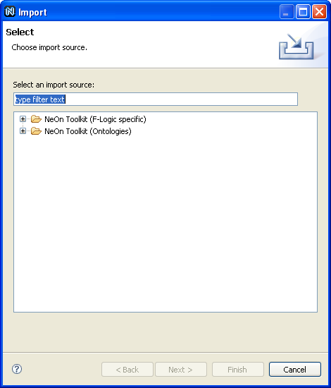
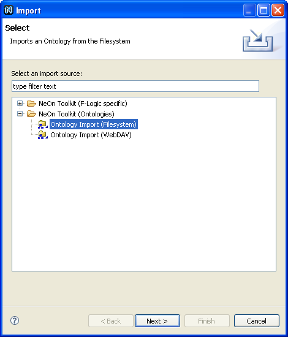

Import an Ontology
To import an ontology, proceed as follows:
- Select an ontology project.
- Import an ontology.
Right-click the ontology project and select Import. The New Ontology dialog opens.

- Select an import source.
Open the folder NeOn Toolkit (Ontologies) and select an import source.
You can choose between the following import methods:
- Filesystem. Import an ontology from the filesystem.
- WebDAV. Import an ontology via WebDAV (Web-based Distributed Authoring and Versioning),
which is a set of extensions to the Hypertext Transfer Protocol (HTTP) that allows users to
collaboratively edit and manage files on remote World Wide Web servers.

- Enter appropriate information.
Enter the following information:
- To Project. Select the project to which you want to import the ontology.
- From File. Select the file you want to import.

- Click Finish.
The ontology will be imported. To discard your changes, click Cancel.

Note – Importing another ontology will also import all of the ontologies that the imported ontology includes.